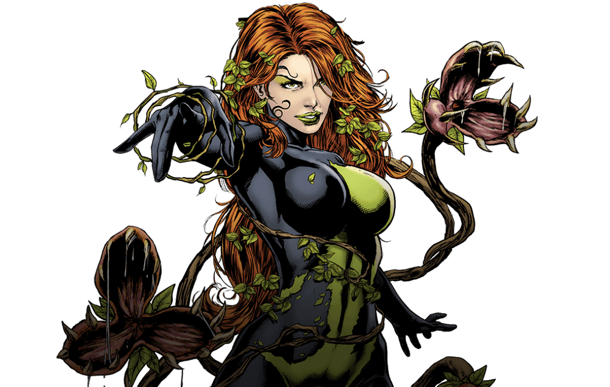

Poison Ivy
Dr. Pamela Isley, was born with a skin condition where she couldn’t be in the sunlight. Her father was very abusive to her and her mother growing up. She later became an eco-terrorist with the power to control all plant life. Having been turned into a plant/human hybrid from an experiment gone wrong. She struggles with her humanity and her insanity to protect plants at all costs. Because of this, she has often acted as an adversary of Batman in Gotham City.